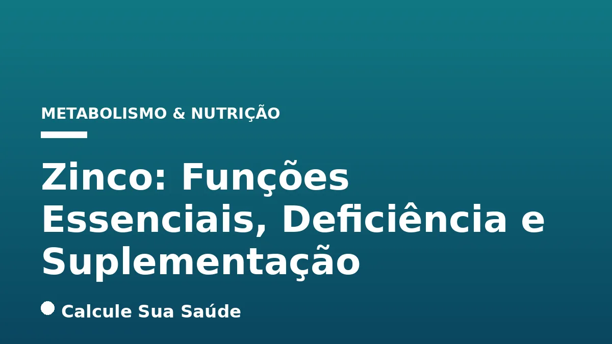

Aviso médico importante
Este conteúdo é educativo e informativo e não substitui a consulta, o diagnóstico ou o tratamento de um profissional de saúde. Em caso de sintomas, procure orientação médica.
Índice do Artigo
- 1. O Zinco: Um Oligoelemento Essencial para a Vida Humana
- 2. As Múltiplas Funções Biológicas do Zinco no Organismo
- 3. Recomendações de Ingestão Diária de Zinco
- 4. Entendendo a Deficiência de Zinco: Causas e Fatores de Risco
- 5. Sinais e Sintomas da Deficiência de Zinco: Um Quadro Clínico Variado
- 6. Diagnóstico da Deficiência de Zinco: Desafios e Abordagens
- 7. Prevenção da Deficiência de Zinco Através da Dieta e Hábitos Saudáveis
- 8. Suplementação de Zinco: Indicações e Protocolos Baseados em Evidências
- 9. Nível de Evidência Científica para a Suplementação de Zinco
- 10. Mitos e Verdades sobre o Zinco e Sua Suplementação
- 11. A Deficiência de Zinco no Contexto Brasileiro: Um Problema de Saúde Pública
- 12. Considerações Finais e Alerta Médico
- 13. Perguntas frequentes
O zinco, um oligoelemento e micronutriente essencial, é um pilar discreto, mas indispensável, para a manutenção da saúde humana. Embora necessário em pequenas quantidades, sua presença é vital para o funcionamento adequado de inúmeros processos biológicos, atuando como um elemento catalítico, estrutural e regulador em mais de 300 reações enzimáticas. Sua importância se estende por diversas áreas, desde o suporte ao sistema imunológico até o metabolismo de macronutrientes e a saúde da pele.
A compreensão das funções do zinco, dos sinais que indicam sua deficiência e das abordagens eficazes para sua suplementação é crucial para a promoção da saúde e prevenção de doenças. Em um cenário onde a deficiência de zinco ainda é considerada um problema de saúde pública em muitas regiões, incluindo o Brasil, torna-se imperativo disseminar informações baseadas em evidências para que indivíduos e profissionais de saúde possam tomar decisões informadas.
Este artigo aprofundado, elaborado pelo Calcule Sua Saúde, visa desmistificar o zinco, apresentando suas funções biológicas detalhadas, os fatores de risco e sintomas associados à sua deficiência, as melhores práticas para diagnóstico e tratamento, e as evidências científicas que sustentam a suplementação. Abordaremos também mitos comuns e a realidade epidemiológica no Brasil, sempre com o rigor científico que o tema YMYL exige, ressaltando que este conteúdo é educativo e não substitui a avaliação de um profissional de saúde.
Em resumo
- O zinco é um oligoelemento essencial, crucial para mais de 300 reações enzimáticas, com papéis vitais no metabolismo, imunidade, crescimento e cicatrização.
- A deficiência de zinco é um problema de saúde pública global e no Brasil, podendo ser causada por dietas inadequadas (especialmente vegetarianas/veganas), condições médicas e fases da vida com necessidades aumentadas.
- Os sintomas da deficiência são variados e inespecíficos, incluindo perda de apetite, atraso no crescimento, queda de cabelo, problemas de pele, imunidade enfraquecida e alterações no paladar/olfato.
- O diagnóstico pode ser desafiador, baseando-se na avaliação clínica, histórico e, em alguns casos, exames laboratoriais, embora estes possam ser imprecisos.
- A prevenção e o tratamento envolvem uma dieta rica em zinco (carnes, frutos-do-mar, leguminosas) e, quando necessário, suplementação oral sob orientação profissional, com doses específicas para diferentes condições.
- É fundamental evitar a automedicação e doses excessivas de zinco, que podem causar efeitos adversos e interagir com outros nutrientes, como ferro e cálcio.
1. O Zinco: Um Oligoelemento Essencial para a Vida Humana
O zinco é classificado como um oligoelemento ou micronutriente, o que significa que, embora o corpo humano precise dele em quantidades relativamente pequenas, sua presença é absolutamente fundamental para a manutenção da vida e da saúde. Diferente dos macronutrientes (carboidratos, proteínas e gorduras), que fornecem energia, os micronutrientes como o zinco atuam como co-fatores em processos bioquímicos vitais, garantindo que as reações celulares ocorram de forma eficiente.
A importância do zinco reside em sua versatilidade funcional. Ele não é apenas um componente passivo, mas um participante ativo em mais de 300 enzimas, onde pode atuar de três maneiras principais: como elemento catalítico, acelerando reações químicas; como elemento estrutural, conferindo estabilidade a proteínas e membranas celulares; e como elemento regulador, influenciando a expressão gênica e a sinalização celular. Essa multiplicidade de papéis o torna indispensável para praticamente todos os sistemas do organismo.
No corpo humano, o zinco está amplamente distribuído, não se concentrando em um único órgão, mas sendo encontrado em diversas células e tecidos. Os ossos, dentes, cabelo, pele, fígado, músculos, glóbulos brancos e testículos são alguns dos locais onde o zinco é mais abundante. Essa distribuição generalizada reflete a vasta gama de funções que ele desempenha, desde a formação de novas células até a proteção contra danos oxidativos.
2. As Múltiplas Funções Biológicas do Zinco no Organismo
A abrangência das funções do zinco no corpo humano é notável, impactando desde o nível celular até sistemas complexos. Sua atuação é tão diversificada que ele é considerado um dos micronutrientes mais importantes para a saúde geral.
Metabolismo de Macronutrientes e Material Genético
O zinco é um componente chave no metabolismo de proteínas, carboidratos e gorduras. Ele é indispensável para a síntese do ácido desoxirribonucleico (DNA) e do ácido ribonucleico (RNA), os blocos construtores da vida, e para a síntese de proteínas, que são essenciais para a estrutura e função de todas as células. Além disso, desempenha um papel crucial na divisão celular, tornando-o vital para o crescimento e reparo tecidual contínuo.
Suporte ao Sistema Imunológico
Uma das funções mais conhecidas do zinco é seu papel fundamental no sistema imunológico. Ele é essencial para o desenvolvimento e funcionamento adequado dos linfócitos, as células de defesa responsáveis por identificar e combater invasores como vírus e bactérias. A deficiência de zinco pode levar a uma imunidade enfraquecida, tornando o indivíduo mais suscetível a infecções e prolongando o tempo de recuperação.
Crescimento, Desenvolvimento e Saúde Reprodutiva
Para crianças e adolescentes, o zinco é vital para o crescimento e desenvolvimento adequados. Sua deficiência pode resultar em atraso no crescimento e na maturação sexual. Em adultos, especialmente homens, o zinco é fundamental para a saúde hormonal, incluindo a produção de testosterona e a qualidade do esperma, sendo associado à fertilidade e à prevenção do hipogonadismo e oligospermia.
Cicatrização de Feridas e Regeneração Tecidual
A capacidade do corpo de cicatrizar feridas e regenerar tecidos depende significativamente de um suprimento adequado de zinco. Ele participa da síntese de colágeno, a principal proteína estrutural da pele e outros tecidos conectivos, e é crucial para a proliferação celular necessária para o fechamento de lesões.
Saúde da Pele, Cabelo e Unhas
Devido ao seu papel na divisão celular e na síntese de proteínas, o zinco é um nutriente importante para a saúde e integridade da pele, folículos capilares e unhas. A deficiência pode manifestar-se através de problemas dermatológicos, queda de cabelo e unhas frágeis.
Função Cognitiva e Sensorial
O zinco contribui para a manutenção da função cognitiva normal, incluindo a memória e a capacidade de concentração. Além disso, é essencial para o bom funcionamento dos sentidos do paladar e olfato, sendo que sua deficiência pode levar à hipogeusia (diminuição do paladar) ou ageusia (perda total do paladar).
Saúde Hormonal e Ação Antioxidante
Além da saúde reprodutiva, o zinco é fundamental para a saúde hormonal geral, participando, por exemplo, da conversão do hormônio tireoidiano T4 inativo em T3 ativo. Ele também possui uma potente ação antioxidante, combatendo os radicais livres e protegendo as células contra o estresse oxidativo, um fator contribuinte para o envelhecimento e diversas doenças crônicas.
3. Recomendações de Ingestão Diária de Zinco
As recomendações de ingestão dietética de referência (DRI) para o zinco são estabelecidas por órgãos de saúde internacionais e adaptadas por autoridades nacionais, como a Food and Nutrition Board nos EUA, cujas diretrizes são frequentemente utilizadas como base no Brasil. Essas recomendações visam garantir que a maioria da população atinja níveis adequados do micronutriente para manter a saúde e prevenir deficiências.
Para adultos saudáveis, as DRIs são geralmente de 11 mg/dia para homens e 8 mg/dia para mulheres. No entanto, é importante notar que as necessidades de zinco podem variar significativamente dependendo da fase da vida e de condições fisiológicas específicas. Por exemplo, durante a gestação e a lactação, as mulheres necessitam de quantidades maiores de zinco para suportar o desenvolvimento fetal e a produção de leite. Crianças e adolescentes em fases de rápido crescimento também demandam mais zinco, assim como os idosos, que podem ter uma absorção menos eficiente e, consequentemente, necessidades aumentadas.
A tabela a seguir resume as recomendações gerais de ingestão diária de zinco para diferentes grupos populacionais:
| Grupo Populacional | Ingestão Diária Recomendada (mg/dia) |
|---|---|
| Bebês (0-6 meses) | 2 mg |
| Bebês (7-12 meses) | 3 mg |
| Crianças (1-3 anos) | 3 mg |
| Crianças (4-8 anos) | 5 mg |
| Crianças (9-13 anos) | 8 mg |
| Adolescentes (14-18 anos) - Meninos | 11 mg |
| Adolescentes (14-18 anos) - Meninas | 9 mg |
| Adultos - Homens | 11 mg |
| Adultos - Mulheres | 8 mg |
| Mulheres Grávidas | 11-12 mg |
| Mulheres Lactantes | 12-13 mg |
É fundamental que a ingestão de zinco seja monitorada, especialmente em grupos de risco, para evitar tanto a deficiência quanto o excesso, que também pode ser prejudicial. A obtenção dessas quantidades através de uma dieta equilibrada é a abordagem preferencial, mas a suplementação pode ser necessária em casos específicos, sempre sob orientação profissional.
4. Entendendo a Deficiência de Zinco: Causas e Fatores de Risco
A deficiência de zinco é um problema de saúde pública global, com prevalência significativa em diversas populações, incluindo o Brasil. Ela pode ser desencadeada por uma combinação de fatores alimentares, condições médicas e características do estilo de vida, que afetam a ingestão, absorção ou utilização do mineral.
Fatores Dietéticos
A dieta é a principal fonte de zinco, e um consumo insuficiente de alimentos ricos nesse mineral é uma causa direta de deficiência. Dietas com baixo teor de carne e outras proteínas de origem animal são particularmente problemáticas, pois essas são as fontes mais biodisponíveis de zinco. Além disso, a presença de fitatos (ácido fítico) em alimentos como grãos integrais, cereais, milho, arroz, feijões, soja, outras leguminosas e nozes pode inibir significativamente a absorção de zinco. Pessoas que seguem dietas vegetarianas ou veganas podem ter um risco maior de deficiência devido ao maior consumo de alimentos ricos em fitatos e à menor ingestão de zinco de fontes animais. No entanto, técnicas de preparo como demolhar, germinar e fermentar podem reduzir o teor de fitatos e melhorar a absorção.
Condições Médicas e Doenças
Diversas condições de saúde podem comprometer a absorção ou aumentar a perda de zinco, levando à deficiência. O transtorno relacionado ao uso de álcool (alcoolismo crônico) é um fator de risco conhecido, pois o álcool interfere na absorção e aumenta a excreção de zinco. Doenças que afetam o trato gastrointestinal, como a doença celíaca, doença de Crohn e outras doenças inflamatórias intestinais, prejudicam a absorção de nutrientes, incluindo o zinco. Outras condições médicas associadas à deficiência incluem doença renal crônica, diabetes mellitus, doença hepática, infecção na corrente sanguínea (sepse), queimaduras extensas e traumatismo craniano. A cirurgia bariátrica também é um fator de risco importante, pois altera a anatomia do trato digestivo e pode levar à má absorção de micronutrientes. A acrodermatite enteropática é uma doença hereditária rara que impede a absorção de zinco, resultando em deficiência grave desde a infância.
Grupos de Risco Específicos
Certos grupos populacionais são mais vulneráveis à deficiência de zinco devido a necessidades aumentadas ou fatores fisiológicos que afetam a absorção:
- Adultos mais velhos (idosos): A absorção de zinco tende a ser menos eficiente com o envelhecimento, e a ingestão alimentar pode ser menor, especialmente em idosos acamados ou institucionalizados.
- Bebês e crianças: Devido às altas demandas para crescimento e desenvolvimento rápido.
- Mulheres grávidas e lactantes: As necessidades de zinco aumentam para suportar o desenvolvimento fetal e a produção de leite materno.
- Vegetarianos e veganos: Pelo motivo dos fitatos e ausência de fontes animais, como mencionado.
- Pessoas desnutridas: A deficiência de zinco frequentemente coexiste com outras deficiências nutricionais.
- Atletas: A perda de zinco pode ocorrer através do suor, e as demandas metabólicas aumentadas podem exigir maior ingestão.
- Pessoas que fazem uso de medicamentos anti-inflamatórios: Alguns medicamentos podem interferir na absorção ou aumentar a excreção de zinco.
- Pessoas com obesidade: Embora possa parecer contraditório, a obesidade está associada a estados inflamatórios que podem afetar o metabolismo do zinco e, em alguns casos, levar à deficiência.
A identificação desses fatores de risco é o primeiro passo para a prevenção e o manejo adequado da deficiência de zinco, que pode ter consequências significativas para a saúde.
5. Sinais e Sintomas da Deficiência de Zinco: Um Quadro Clínico Variado
A deficiência de zinco pode ser insidiosa, com manifestações clínicas que variam de sutis a graves, afetando múltiplos sistemas de órgãos. Os sintomas são frequentemente inespecíficos, o que pode dificultar o diagnóstico, mas a atenção a um conjunto de sinais pode levantar a suspeita.
Manifestações Comuns e Inespecíficas
- Perda de apetite: Um dos primeiros sinais, que pode levar a um ciclo vicioso de menor ingestão de zinco.
- Atraso no crescimento: Em bebês e crianças, a deficiência de zinco é uma causa conhecida de retardo no desenvolvimento físico.
- Queda de cabelo (alopecia): O zinco é importante para a saúde dos folículos capilares, e sua deficiência pode levar à perda de cabelo.
- Problemas de pele: A pele pode apresentar-se seca, escamosa ou inflamada. Dermatite, especialmente ao redor da boca, olhos e genitais, é um sintoma característico. Também pode haver agravamento de eczema e acne, e em casos graves, dermatite psoriasiforme.
- Cicatrização tardia de feridas: A capacidade do corpo de reparar tecidos é comprometida, resultando em feridas que demoram a cicatrizar.
- Comprometimento do paladar e olfato (hipogeusia, ageusia): A redução ou perda dos sentidos do paladar e olfato é um sintoma clássico da deficiência de zinco, afetando a qualidade de vida e o apetite.
- Sistema imunológico enfraquecido: Maior susceptibilidade a infecções, que podem ser mais frequentes, graves ou prolongadas, devido ao papel do zinco na função imunitária.
- Fadiga, irritabilidade, letargia e distúrbios de concentração: Sintomas neurológicos e psicológicos que podem ser confundidos com outras condições, como a depressão ou ansiedade.
- Problemas de fertilidade: Em homens, pode haver atraso no amadurecimento sexual, hipogonadismo e oligospermia.
- Diarreia: Episódios recorrentes de diarreia podem ser um sintoma e, ao mesmo tempo, um fator que agrava a deficiência de zinco.
- Unhas frágeis ou distrofia da unha: Alterações na aparência e resistência das unhas.
- Declínio cognitivo: Em idosos, a deficiência de zinco tem sido associada a um maior risco de declínio cognitivo.
A tabela a seguir resume os principais sinais e sintomas da deficiência de zinco, categorizados por sistema afetado:
| Sistema Afetado | Sinais e Sintomas Comuns |
|---|---|
| Geral/Metabólico | Perda de apetite, atraso no crescimento (crianças), fadiga, letargia, irritabilidade, perda de peso inexplicada. |
| Pele e Anexos | Dermatite (boca, olhos, genitais), pele seca/escamosa, agravamento de eczema/acne, queda de cabelo (alopecia), unhas frágeis/distróficas, cicatrização tardia de feridas. |
| Imunológico | Maior susceptibilidade a infecções, infecções frequentes/prolongadas, resposta imune comprometida. |
| Sensorial/Cognitivo | Comprometimento do paladar (hipogeusia/ageusia), comprometimento do olfato, distúrbios de concentração, declínio cognitivo (idosos). |
| Reprodutivo | Atraso na maturação sexual, hipogonadismo (homens), oligospermia (homens), problemas de fertilidade. |
| Gastrointestinal | Diarreia crônica ou recorrente. |
É importante ressaltar que a presença de um ou mais desses sintomas não confirma automaticamente a deficiência de zinco, pois muitos deles podem ser causados por outras condições. No entanto, a persistência de múltiplos sinais, especialmente em indivíduos com fatores de risco conhecidos, deve levar à investigação médica. A deficiência de zinco pode, por vezes, mimetizar ou exacerbar outras deficiências nutricionais, como a anemia ferropriva, tornando o diagnóstico diferencial crucial.
6. Diagnóstico da Deficiência de Zinco: Desafios e Abordagens
O diagnóstico da deficiência de zinco pode ser desafiador devido à inespecificidade dos sintomas e à complexidade da avaliação laboratorial. Não existe um único teste que seja universalmente preciso para determinar o status de zinco de um indivíduo, especialmente em casos de deficiência leve ou moderada.
Avaliação Clínica e Histórico
O primeiro passo para o diagnóstico é uma avaliação médica completa, que inclui o histórico clínico detalhado do paciente. O médico investigará a presença de sintomas sugestivos, fatores de risco (como dieta, condições médicas preexistentes, uso de medicamentos) e o histórico alimentar. A suspeita clínica é fundamental, especialmente em grupos de risco.
Exames Laboratoriais: Limitações e Potencial
A medição da concentração de zinco no sangue, seja zinco sérico ou plasmático, é o método laboratorial mais comum. No entanto, esses exames podem apresentar limitações significativas. Os níveis de zinco no sangue podem não refletir com precisão os estoques totais de zinco no corpo, pois o mineral é amplamente distribuído em tecidos e ossos. Além disso, baixos níveis de albumina, uma proteína frequentemente reduzida em estados de deficiência de zinco, podem dificultar a interpretação dos resultados séricos, tornando-os imprecisos para deficiência aguda. A medição do zinco na urina também pode ser realizada, mas igualmente pode não ser um indicador confiável do status de zinco.
Resposta à Suplementação
Em muitos casos, a melhora dos sintomas após o início da suplementação de zinco é um forte indicativo de que a deficiência estava presente. Essa abordagem terapêutica-diagnóstica pode ser útil quando os exames laboratoriais são inconclusivos ou não estão prontamente disponíveis. No entanto, deve ser realizada sob supervisão médica para garantir a segurança e a eficácia.
Novos Exames e Abordagens Populacionais
Pesquisas estão em andamento para desenvolver métodos de diagnóstico mais precisos. O conteúdo de zinco celular e testes genéticos para condições específicas, como a acrodermatite enteropática, são mencionados como avanços promissores. Para o diagnóstico em nível populacional, a Organização Mundial da Saúde (OMS) e outras agências recomendam uma abordagem multifacetada, utilizando um conjunto de três indicadores para obter a melhor estimativa do risco de deficiência de zinco:
- Indicador bioquímico: Deficiência de zinco sérico.
- Indicador dietético: Avaliação da ingestão inadequada de zinco através de inquéritos alimentares.
- Indicador funcional: Déficit de altura para idade em crianças, que é um marcador de crescimento e desenvolvimento afetado pela deficiência de zinco.
Essa abordagem abrangente é crucial para identificar populações em risco e implementar intervenções de saúde pública eficazes. Para o indivíduo, o diagnóstico deve ser sempre feito por um profissional de saúde, que considerará todos os aspectos clínicos e laboratoriais disponíveis.
7. Prevenção da Deficiência de Zinco Através da Dieta e Hábitos Saudáveis
A prevenção da deficiência de zinco é, em grande parte, uma questão de nutrição adequada e manejo de condições subjacentes. Uma dieta equilibrada e rica em fontes de zinco é a primeira e mais importante linha de defesa.
Fontes Alimentares Ricas em Zinco
Incluir uma variedade de alimentos integrais e ricos em zinco na dieta diária é fundamental. As fontes mais biodisponíveis de zinco são de origem animal, onde o mineral está menos ligado a fitatos e outros inibidores de absorção. As principais fontes incluem:
- Carnes vermelhas: Boi, cordeiro e porco são excelentes fontes.
- Aves: Frango e peru, especialmente as partes escuras.
- Peixes e frutos-do-mar: As ostras são notavelmente ricas em zinco, sendo uma das melhores fontes dietéticas. Outros frutos-do-mar como caranguejo e lagosta também contêm boas quantidades.
- Ovos e laticínios: Leite, queijo e iogurte fornecem zinco, embora em quantidades menores que as carnes.
- Leguminosas: Feijões, lentilhas, grão-de-bico e soja são boas fontes vegetais, mas a absorção pode ser afetada pelos fitatos.
- Nozes e sementes: Castanhas de caju, amêndoas, sementes de abóbora e gergelim.
- Grãos integrais e cereais fortificados: Embora os grãos integrais contenham fitatos, eles ainda contribuem com zinco para a dieta. Muitos cereais matinais são fortificados com zinco.
Técnicas de Preparo para Melhorar a Absorção
Para aqueles que dependem mais de fontes vegetais de zinco, ou para otimizar a absorção de todos, algumas técnicas de preparo podem ser muito úteis. Os fitatos, presentes em leguminosas, grãos e sementes, podem inibir a absorção de zinco. No entanto, processos como:
- Demolhar: Deixar leguminosas e grãos de molho por várias horas antes do cozimento.
- Germinar: Permitir que sementes e grãos germinem.
- Fermentar: Usar processos de fermentação, como na produção de pão de massa azeda ou vegetais fermentados.
Essas técnicas ajudam a quebrar os fitatos, liberando o zinco e tornando-o mais disponível para absorção. A cocção adequada dos alimentos também pode contribuir para a redução de fitatos. É importante notar que a ingestão de fibras alimentares é benéfica, mas o equilíbrio é chave para não comprometer a absorção de minerais.
Abordagem de Causas Subjacentes
Além da dieta, é crucial abordar quaisquer condições médicas que possam estar contribuindo para a deficiência de zinco. O tratamento de doenças gastrointestinais, como doença celíaca ou doença de Crohn, pode melhorar significativamente a absorção de nutrientes. Da mesma forma, o manejo de condições como o alcoolismo crônico ou a doença renal pode ajudar a restaurar os níveis de zinco. Para indivíduos que passaram por cirurgia bariátrica, o acompanhamento nutricional e a suplementação preventiva são essenciais. Uma dieta variada, como a Dieta Mediterrânea, que enfatiza alimentos integrais e frescos, pode ser uma excelente estratégia preventiva geral.
8. Suplementação de Zinco: Indicações e Protocolos Baseados em Evidências
A suplementação de zinco é uma ferramenta terapêutica importante para corrigir deficiências e auxiliar no tratamento de certas condições de saúde. No entanto, deve ser feita com cautela e, idealmente, sob orientação de um profissional de saúde, para garantir a dose correta e evitar efeitos adversos.
Tratamento da Deficiência Confirmada
Para indivíduos com deficiência de zinco confirmada, o tratamento geralmente consiste na suplementação oral de zinco elementar. As doses recomendadas podem variar, mas uma abordagem comum é de 1-3 mg de zinco elementar por quilograma de peso corporal, uma vez ao dia, até que os sinais e sintomas da deficiência desapareçam. Para adultos saudáveis que necessitam de suplementação, alguns estudos sugerem uma dose diária padrão de 15 a 30 mg de zinco elementar. É crucial tomar o suplemento durante ou logo após uma refeição principal para minimizar o desconforto gástrico, como náuseas, que pode ocorrer se tomado em jejum. O período de suplementação pode ser de pelo menos três meses, com ajustes baseados em exames de sangue e na melhora clínica.
Aplicações Específicas da Suplementação de Zinco
Diarreia Infantil
A Organização Mundial da Saúde (OMS) e o UNICEF recomendam enfaticamente o uso rotineiro de zinco como adjuvante da terapia de reidratação oral para o tratamento da diarreia infantil. Essa intervenção demonstrou reduzir a duração e a gravidade dos episódios diarreicos. As recomendações são:
- Crianças com diarreia (acima de 2 meses): 20 mg de zinco por dia, por 10 a 14 dias.
- Lactentes (até 2 meses): 10 mg de zinco por dia, por 10 a 14 dias.
Degeneração Macular Relacionada à Idade (DMRI)
Estudos indicam que o zinco, quando combinado com outros antioxidantes (como vitaminas C e E, e betacaroteno), pode ser modestamente eficaz em retardar a progressão da degeneração macular intermediária e avançada relacionada à idade. Essa combinação é frequentemente referida como a formulação AREDS (Age-Related Eye Disease Study).
Doença de Wilson
A doença de Wilson é uma condição genética rara caracterizada pelo acúmulo excessivo de cobre no corpo. O zinco é um tratamento eficaz para essa doença, pois interfere na absorção de cobre no intestino e induz a síntese de metalotioneínas, proteínas que se ligam ao cobre e o impedem de causar danos.
Considerações Importantes na Suplementação
É vital não exceder as doses recomendadas, pois o excesso de zinco pode ser prejudicial, levando a efeitos adversos como náuseas, vômitos, deficiência de cobre, perturbações imunitárias, diminuição dos níveis de colesterol HDL e anemia. A interação com outros minerais, como ferro e cálcio, também deve ser considerada, pois altas doses desses podem interferir na absorção de zinco. Se necessário, a suplementação deve ser feita em horários separados. Sempre consulte um profissional de saúde antes de iniciar qualquer suplementação.
9. Nível de Evidência Científica para a Suplementação de Zinco
A ciência tem investigado o papel da suplementação de zinco em diversas condições de saúde, com resultados variados e níveis de evidência distintos. É fundamental basear as recomendações em estudos robustos e revisões sistemáticas para garantir a eficácia e segurança.
Resfriado Comum
Há evidências que sugerem que a suplementação de zinco pode reduzir a duração dos sintomas do resfriado comum em quase pela metade, se iniciada nas primeiras 24 horas do aparecimento dos sintomas. No entanto, a eficácia parece ser dose-dependente, e não há evidência de benefícios para doses superiores a 100 mg/dia para o resfriado. Além disso, doses elevadas podem estar associadas a efeitos adversos. A forma do zinco (pastilhas, xaropes) e a duração do tratamento também podem influenciar os resultados.
Prevenção de Infecções em Países em Desenvolvimento
Em países em desenvolvimento, onde a deficiência de zinco é mais prevalente e as condições sanitárias são precárias, a suplementação de zinco demonstrou ser eficaz na prevenção de infecções do trato respiratório superior e diarreia em crianças desnutridas. Além disso, como tratamento adjunto para a diarreia infantil, o zinco é amplamente recomendado pela OMS e UNICEF, como já mencionado, devido à sua capacidade de reduzir a gravidade e a duração dos episódios.
Necessidade de Mais Estudos
Embora a maioria dos estudos tenha demonstrado algum resultado positivo com a utilização do suplemento com zinco, sinalizando para a importância da suplementação na terapêutica auxiliar e preventiva de inúmeras doenças, a comunidade científica ainda ressalta a necessidade de mais pesquisas. São necessários estudos adicionais para esclarecer a farmacocinética dos diferentes sais de zinco, determinar o tempo ideal de uso e otimizar as doses para garantir maior eficácia terapêutica em diversas condições.
Onde a Evidência é Limitada ou Ausente
É igualmente importante reconhecer as áreas onde a evidência científica atual não apoia a suplementação de zinco como eficaz. Os dados atuais não sustentam a suplementação de zinco para:
- Infecção do trato respiratório superior (em geral): Embora possa ajudar no resfriado comum, a evidência para outras infecções respiratórias é menos clara.
- Cicatrização de ferimentos (em geral): Embora o zinco seja crucial para a cicatrização, a suplementação em indivíduos sem deficiência comprovada não demonstrou acelerar significativamente o processo em todos os tipos de feridas.
- Vírus da Imunodeficiência Humana (HIV): A suplementação de zinco em pacientes com HIV não tem evidências robustas de benefício generalizado.
Portanto, a decisão de suplementar zinco deve ser baseada em uma avaliação cuidadosa do status nutricional do indivíduo, dos sintomas apresentados e das evidências científicas disponíveis para a condição específica que se pretende tratar ou prevenir.
10. Mitos e Verdades sobre o Zinco e Sua Suplementação
No universo da nutrição e suplementação, muitos mitos podem surgir, e o zinco não é exceção. É crucial distinguir o que a ciência realmente diz para garantir o uso seguro e eficaz desse micronutriente.
Mito: Tomar zinco em jejum é a melhor forma de absorção.
Ciência: Embora alguns nutrientes sejam melhor absorvidos em jejum, o zinco não é um deles. Tomar zinco em jejum pode causar desconforto gástrico significativo, como náuseas e vômitos. A recomendação é tomá-lo durante ou logo após uma refeição principal. Isso não apenas minimiza os efeitos colaterais gastrointestinais, mas também pode otimizar a absorção em alguns contextos.
Mito: Doses muito altas de zinco são sempre mais eficazes.
Ciência: Mais nem sempre é melhor, especialmente com micronutrientes. Doses elevadas de zinco (acima de 40 mg/dia para adultos, e especialmente acima de 100 mg/dia) podem causar uma série de efeitos adversos. Estes incluem náuseas, vômitos, deficiência de cobre (pois o zinco compete com o cobre pela absorção), perturbações imunitárias, diminuição dos níveis de colesterol HDL (o 'colesterol bom'), e anemia. Para o resfriado comum, por exemplo, não há evidência de benefícios para doses superiores a 100 mg/dia, e os riscos superam os potenciais benefícios. O equilíbrio é fundamental.
Mito: Ferro e cálcio não afetam a absorção de zinco.
Ciência: Altas doses de ferro e cálcio podem, de fato, interferir na absorção de zinco. Isso ocorre porque esses minerais competem pelos mesmos transportadores no intestino. Se a suplementação desses minais for necessária, recomenda-se tomá-los em horários separados para otimizar a absorção de cada um. Por exemplo, tomar o suplemento de zinco com uma refeição e o de ferro ou cálcio em outro momento do dia. A interação entre ferro e zinco é particularmente relevante em suplementos multivitamínicos ou para gestantes.
Mito: Fontes vegetais de zinco são tão facilmente absorvidas quanto as de origem animal.
Ciência: A absorção de zinco de fontes vegetais, como leguminosas e grãos, aparenta ser menor comparativamente à de fontes de origem animal. Isso se deve principalmente à presença de fitatos (ácido fítico) nas plantas, que se ligam ao zinco e formam complexos insolúveis, dificultando sua absorção. Por essa razão, pessoas que seguem dietas vegetarianas ou veganas podem precisar de uma ingestão até 50% maior da dose diária recomendada de zinco para compensar a menor biodisponibilidade. No entanto, uma alimentação vegetariana variada, que inclua leguminosas, cereais e oleaginosas, pode ser suficiente se forem utilizadas técnicas como demolhar, germinar e fermentar para reduzir o teor de fitatos e melhorar a absorção.
11. A Deficiência de Zinco no Contexto Brasileiro: Um Problema de Saúde Pública
A deficiência de zinco não é um problema restrito a países em desenvolvimento, sendo considerada uma questão de saúde pública em diversas regiões do mundo, incluindo o Brasil. O país é classificado como tendo um risco moderado de deficiência de zinco, o que indica a necessidade de atenção e estratégias de intervenção.
Prevalência em Crianças
Estudos realizados no Brasil têm focado predominantemente na população infantil, que é particularmente vulnerável devido às suas elevadas necessidades para crescimento e desenvolvimento. A prevalência da deficiência bioquímica de zinco em crianças brasileiras tem demonstrado grande variabilidade, com taxas que vão de 0,0% a impressionantes 74,3% em diferentes estudos, indicando prevalências expressivas na maioria das pesquisas. Essa ampla gama reflete as disparidades regionais e socioeconômicas existentes no país. Além da deficiência bioquímica, a inadequação dietética de zinco entre as crianças brasileiras também é um achado comum, variando de 16,6% a 46,0% em diferentes levantamentos.
Esses dados sugerem fortemente que a deficiência de zinco em crianças é um problema de saúde pública no Brasil, com potencial impacto no desenvolvimento físico e cognitivo, além de comprometer a função imunológica. A boa notícia é que, em muitos casos, essa deficiência é prevenível por meio da suplementação com o micronutriente, especialmente em populações de risco.
Impacto em Idosos
Embora o foco principal dos estudos seja em crianças, a deficiência de zinco também afeta outras faixas etárias. Um estudo em idosos da comunidade no Brasil, por exemplo, encontrou uma prevalência de deficiência de zinco de 3,9%. Mais preocupante, o estudo revelou uma prevalência de declínio cognitivo de 9,4% nessa população, sendo que essa taxa foi significativamente maior em idosos com deficiência de zinco (26,1%) do que naqueles com níveis adequados do mineral (8,8%). Esses achados reforçam a importância do zinco para a função cognitiva, especialmente no envelhecimento, e destacam a necessidade de rastreamento e intervenção em populações idosas.
Implicações para a Saúde Pública
A persistência da deficiência de zinco no Brasil, tanto em crianças quanto em idosos e outros grupos vulneráveis, sublinha a necessidade de políticas públicas eficazes. Isso inclui programas de fortificação de alimentos, educação nutricional para promover o consumo de fontes ricas em zinco e, quando apropriado, programas de suplementação direcionada. A conscientização sobre os fatores de risco e os sintomas da deficiência é crucial para que profissionais de saúde e a população em geral possam identificar e abordar o problema precocemente.
12. Considerações Finais e Alerta Médico
O zinco é, sem dúvida, um micronutriente de importância inestimável para a saúde humana, com um papel multifacetado que se estende por quase todos os sistemas do corpo. Desde o suporte ao sistema imunológico e ao metabolismo até a promoção do crescimento e da cicatrização, suas funções são vitais para o bem-estar em todas as fases da vida. A deficiência de zinco, um problema de saúde pública em muitas regiões, incluindo o Brasil, pode levar a uma ampla gama de sintomas, muitas vezes inespecíficos, que comprometem a qualidade de vida e aumentam a vulnerabilidade a doenças.
A prevenção, por meio de uma dieta equilibrada e rica em fontes de zinco, é a estratégia mais eficaz. Para aqueles em risco ou com deficiência confirmada, a suplementação de zinco, quando bem indicada e monitorada, pode trazer benefícios significativos, como demonstrado em casos de diarreia infantil e degeneração macular. No entanto, é crucial desmistificar informações e basear as decisões em evidências científicas sólidas, evitando doses excessivas que podem ser prejudiciais e interações com outros nutrientes.
Este artigo teve como objetivo fornecer um guia abrangente e cientificamente embasado sobre o zinco, suas funções, os sinais de deficiência e as diretrizes de suplementação. Contudo, é imperativo reforçar que este conteúdo é de caráter puramente educativo e informativo. Ele não substitui, em hipótese alguma, a consulta, avaliação e acompanhamento de um profissional de saúde qualificado. A automedicação ou a alteração de tratamentos sem orientação médica podem acarretar riscos à saúde. Em caso de suspeita de deficiência de zinco ou qualquer outra condição de saúde, procure sempre um médico ou nutricionista para um diagnóstico preciso e um plano de tratamento individualizado.
13. Perguntas frequentes
Quais são as principais funções do zinco no corpo humano?
O zinco é essencial para mais de 300 reações enzimáticas, atuando no metabolismo de proteínas, carboidratos e gorduras, na síntese de DNA/RNA, no suporte ao sistema imunológico, no crescimento e desenvolvimento, na cicatrização de feridas, na saúde da pele, cabelo e unhas, e na função cognitiva e sensorial.
Como posso saber se tenho deficiência de zinco?
Os sintomas são variados e inespecíficos, incluindo perda de apetite, atraso no crescimento (em crianças), queda de cabelo, problemas de pele, cicatrização lenta, alteração no paladar/olfato e imunidade enfraquecida. O diagnóstico é feito por um profissional de saúde, que avaliará sintomas, histórico e, se necessário, exames laboratoriais.
Quais alimentos são ricos em zinco?
As melhores fontes de zinco são carnes vermelhas, aves, peixes (especialmente ostras), ovos e laticínios. Fontes vegetais incluem leguminosas (feijão, lentilha), nozes, sementes e grãos integrais, mas sua absorção pode ser menor devido aos fitatos.
Quem tem maior risco de desenvolver deficiência de zinco?
Grupos de risco incluem idosos, bebês e crianças, mulheres grávidas e lactantes, vegetarianos e veganos, pessoas desnutridas, atletas, indivíduos com doenças gastrointestinais ou hepáticas, e aqueles que passaram por cirurgia bariátrica.
A suplementação de zinco é sempre recomendada?
Não. A suplementação é indicada para deficiência confirmada ou em condições específicas, como diarreia infantil e degeneração macular relacionada à idade, sempre sob orientação médica. Doses elevadas podem causar efeitos adversos e interagir com outros minerais.
Quais são os riscos de tomar zinco em excesso?
Doses muito altas de zinco podem levar a náuseas, vômitos, deficiência de cobre, perturbações imunitárias, diminuição do colesterol HDL e anemia. É crucial seguir as recomendações de dosagem e não exceder o limite superior de ingestão sem supervisão profissional.
O zinco pode interagir com outros suplementos ou medicamentos?
Sim, altas doses de ferro e cálcio podem interferir na absorção de zinco, sendo recomendado tomá-los em horários separados. Certos medicamentos, como alguns anti-inflamatórios, também podem afetar os níveis de zinco. Sempre informe seu médico sobre todos os suplementos e medicamentos que você utiliza.
A deficiência de zinco é um problema no Brasil?
Sim, a deficiência de zinco é considerada um problema de saúde pública no Brasil, classificado como um país com risco moderado. Estudos mostram prevalências significativas em crianças e idosos, com impactos no crescimento, desenvolvimento e função cognitiva.
Leia também
Referências e Fontes
1. Manual MSD Versão Saúde para a Família. Deficiência de zinco - Distúrbios nutricionais. Disponível em: msdmanuals.com
2. BMJ Best Practice. Deficiência de zinco - Sintomas, diagnóstico e tratamento. Disponível em: bestpractice.bmj.com
3. DocMorris. Sinais de que podes ter deficiência de zinco: riscos, sintomas e como prevenir. Disponível em: docmorris.pt
4. ProVeg Brasil. Zinco: descobre mais sobre este mineral. Disponível em: proveg.org
5. Sociedade Brasileira de Medicina de Família e Comunidade (SBMFC). Zinco. Disponível em: sbmfc.org.br
6. Unimed Campinas. Zinco: guia completo para entender a relevância desse mineral para a saúde. Disponível em: unimedcampinas.com.br
7. RSD Journal. O uso do zinco na terapêutica e prevenção de doenças: uma revisão. Disponível em: rsdjournal.org
8. Memed. Deficiência de zinco: o que é, causas, sintomas e tratamento. Disponível em: blog.memed.com.br